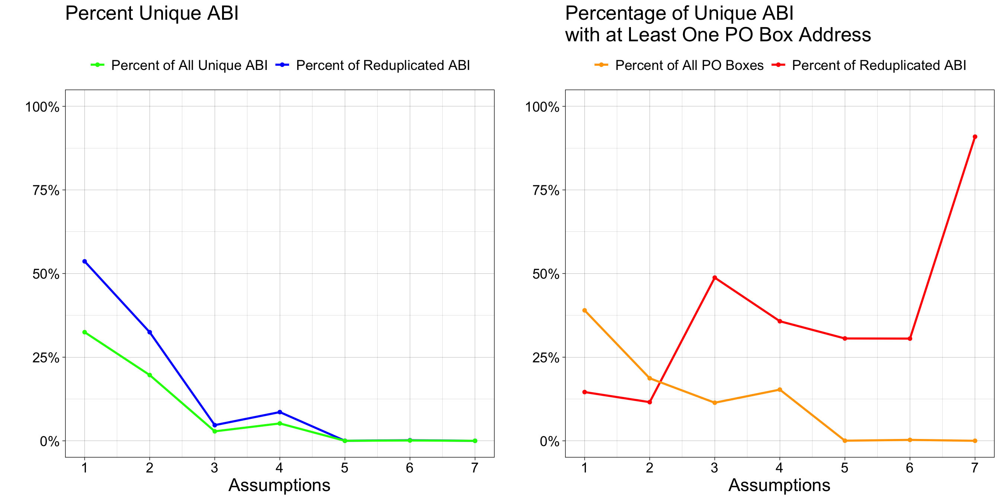

duplicated(church_wide$abi) %>% table()Review the Existing Process
Last Updated: April 11th, 2026
The purpose of this page is to provide an understanding of the challenges associated with the data and to identify opportunities for data validation or cleaning. Therefore, we do not need to be concerned with evaluating every case.
Selected code excerpts are provided below. The complete code used to generate this report can be found in Code/Explore the Raw Data.R.
Raw Data Dictionary
File name: church_wide_form_071723.csv
Number of rows: 2,601,599
Number of columns: 31
abi: American Business Identifier (ABI): The unique identifier for each business, used to associate addresses with a specific organization.
year_established: Indicates the year the business was first established.
state: The state associated with the address.
city: The city associated with the address.
zipcode: The five-digit ZIP code associated with the address.
address_line_1: The primary address line associated with the ABI entry.
primary_naics_code: This dataset combines the six-digit 2022 vintage North American Industry Classification System (NAICS) code and a two-digit proprietary code from Data Axle. The two-digit Data Axle code provides additional classification details not reflected here.
naics8_descriptions: All entries have NAICS = 813110, indicating they are classified as ‘Religious Organizations’, which includes churches, shrines, monasteries (except schools), synagogues, mosques, and temples.
longitude and latitude: Given as two columns. Provides the geolocation associated with the address listed in that row.
2001 to 2021: One binary column per year (2001–2021) indicating whether a response was recorded for that address:
1if a response was received,NAif no response was received.
Reduplicate ABI’s
Because ABIs are used to uniquely identify entries, we need to ensure that there are no reduplicates.
1 TRUE 1647336
2 FALSE 954263It appears that there may be several entries containing reduplicated information, impacting as many as 577727 unique ABIs. We examine each unique ABI that may potentially be reduplicated in the following ways:
- Confirm that the date binaries are mutually exclusive, indicating that each recorded entry provides unique information.
- Confirm that the ZIP code remains consistent across entries.
- Verify that the following metadata fields are consistent across entries:
year_established,state,city,primary_naics_code, andnaics8_descriptions. - Confirm that the longitude and latitude coordinates fall within acceptable error margins for a given business address.
Show the code
## ----------------------------------------------------------------
## AMERICAN BUSINESS IDENTIFIER (ABI) REDUPLICATES
search_space <- church_wide$abi[duplicated(church_wide$abi)] %>% unique()
# Add a progress bar to show where the function is in the for loop.
pb = txtProgressBar(min = 0, max = length(search_space), style = 3)
result <- NULL
for(i in 1:length(search_space)) {
# Subset to show only the entries associated with one duplicated ABI.
subset <- church_wide[church_wide$abi %in% search_space[i], ]
# 1. Confirm the date binaries are mutually exclusive. A passing result will
# say "TRUE".
test_1 <- sapply(subset[, 11:31], function(x) sum(x, na.rm = TRUE)) %!in% c(0, 1) %>% any() == FALSE
# 2. Confirm the other metadata are consistent. This is excluding the
# longitude and latitude values.
# Same zip code? A passing result will say "TRUE".
test_2a <- subset$zipcode %>% unique() %>% length() == 1
# All duplicated entries metadata are same? A passing result will say "TRUE".
test_2b <- subset[, c("year_established", "state", "city", "primary_naics_code", "naics8_descriptions")] %>%
unique() %>% nrow() == 1
# 3. Confirm the longitude and latitude are within error of each other. A
# passing result will say "TRUE".
test_3 <- max(subset$longitude) - min(subset$longitude) < 1 & max(subset$latitude) - min(subset$latitude) < 1
result <- rbind(result, cbind(search_space[i], test_1, test_2a, test_2b, test_3))
# Print the for loop's progress.
setTxtProgressBar(pb, i)
}
# Commit result with reformatting.
result <- result %>% as.data.frame() %>%
`colnames<-`(c("abi", "Exclusive", "Zip_Same", "Metadata_Same", "LonLat_Similar"))
# Convert results from binary back to logical.
result[, -1] <- apply(result[, -1], 2, function(x) as.logical(x))
# Save the result.
write.csv(result, "Data/Results/KEEP LOCAL/From Explore the Raw Data/ABI Duplicates Test_05.16.2025.csv")Mutually Exclusive Dates
Each reduplicated ABI reports unique binary records across all year columns. The table below confirms that every column-wise sum per ABI yields 0 or 1 (TRUE), the expected result for unique records.
1 TRUE 577727
2 FALSE 0Moves vs. Reduplications
To appropriately evaluate the remaining three conditions listed above, we need to differentiate variations resulting from explainable sources, such as moves, or errors in data reporting. The primary suspicion is that the detected reduplications arise from alternative addresses associated with the ABIs over a 20-year span.
Below are summary tables showing the different combinations of the remaining three conditions listed above:
Counts of Reduplicated ABIs
, , Long/Lat = FALSE
Zip Code
Metadata FALSE TRUE
FALSE 1047 9
TRUE 2 134
, , Long/Lat = TRUE
Zip Code
Metadata FALSE TRUE
FALSE 49634 187570
TRUE 27073 309950Percentages of Reduplicated ABI’s
, , Long/Lat = FALSE
Zip Code
Metadata FALSE TRUE
FALSE 0.18 0.00
TRUE 0.00 0.02
, , Long/Lat = TRUE
Zip Code
Metadata FALSE TRUE
FALSE 8.59 32.47
TRUE 4.69 53.65We expect the following results if certain combinations of assumptions are validated:
LonLat_Similar, Zip_Same, Metadata_Same = TRUE: The church has not moved, no alternative address outside of the reported zip code was used (e.g., PO Box), and the other metadata did not change. This implies that the only variation detected comes from theaddress_line_1entry, and no special considerations are required.RESULTS: Approximately 54% of duplicated entries apply, accounting for 33% of all unique ABIs in the dataset. Of these, nearly 15% used a PO Box at some point, representing almost 5% of all ABIs and 39% of all PO Box entries..
LonLat_Similar, Zip_Same = TRUEandMetadata_Same = FALSE: The church has not significantly moved, which implies that the observed variation is driven by a field other thanaddress_line_1(e.g.,year_established,state,city,primary_naics_code, ornaics8_descriptions). These discrepancies may reflect data entry errors or the recording of alternative city locations rather than an actual relocation. Further investigation will ensure completeness.RESULTS: Approximately 33% of duplicated entries apply, accounting for 20% of all unique ABIs in the dataset. Of these, nearly 12% used a PO Box at some point, representing almost 3% of all ABIs and 19% of all PO Box entries.
LonLat_Similar, Metadata_Same = TRUEandZip_Same = FALSE: This issue can be attributed to two explainable scenarios: either the move was small but resulted in a new zip code, or one of the addresses used a PO Box with a different zip code but the same latitude and longitude as a nearby address. Additionally, there might have been a typographical error in the zip code.RESULTS: Approximately 5% of duplicated entries apply, accounting for 3% of all unique ABIs in the dataset. Of these, nearly 48% used a PO Box at some point, representing almost 1.4% of all ABIs and 12% of all PO Box entries.
LonLat_Similar = TRUEandZip_Same, Metadata_Same = FALSE: This discrepancy may also be attributable to small relocations that go undetected by the geolocation change threshold yet produce a change in city, zip code, or state for border locations. Variation in the recorded year established may similarly contribute. Both sources of discrepancy will be further investigated and are expected to be addressed in the same manner as the second or third assumption combinations.RESULTS: Approximately 9% of duplicated entries apply, accounting for 5.2% of all unique ABIs in the dataset. Of these, nearly 36% used a PO Box at some point, representing almost 1.9% of all ABIs and 15% of all PO Box entries.
LonLat_Similar = FALSEandZip_Same, Metadata = TRUE: It is unlikely that there would be a significant move without a change in the zip code and other metadata, such as the city or state. It is also possible that non-physical addresses, like PO Boxes, are contributing to this outcome. These are rare occurrences and will be investigated individually to assess for typographical errors.RESULTS: Approximately 0.02% of duplicated entries apply, accounting for 0.01% of all unique ABIs in the dataset. Of these, nearly 31% used a PO Box at some point, representing almost 0.004% of all ABIs and 0.04% of all PO Box entries.
LonLat_Similar, Zip_Same, Metadata = FALSE: These entries are most likely associated with a significant move out of the area and will be treated in the same manner as the fifth combination of assumptions. Their zip codes and other metadata might also contain typographical errors that will need to be assessed for completeness.RESULTS: Approximately 0.18% of duplicated entries apply, accounting for 0.11% of all unique ABIs in the dataset. Of these, nearly 31% used a PO Box at some point, representing almost 0.03% of all ABIs and 0.3% of all PO Box entries.
LonLat_Similar, Metadata = FALSEandZip_Same = TRUEORLonLat_Similar, Zip_Same = FALSEandMetadata = TRUE: These results suggest significant relocations with no change in zip code or other metadata. Though a stable zip code is plausible, no change across any address field is unusual. These rare cases will be individually reviewed for typographical errors.RESULTS: Approximately 0.002% of duplicated entries apply, accounting for 0.001% of all unique ABIs in the dataset. Of these, nearly 91% used a PO Box at some point, representing almost 0.001% of all ABIs and 0.01% of all PO Box entries.
Below are graphs showing the distribution of representation across the seven different assumptions listed above. We observe that most outcomes fall into the categories of small or no moves, with over half of the data not indicating any typographical errors. A significant percentage of unique ABIs with at least one PO Box included are also represented in the first two conditions, following the same patterns as the left graph.

Typographical errors are most likely associated with the last three assumption combinations. Although most entries appear to satisfy superficial expectations, additional validation is clearly needed to ensure accuracy. There is also a trend suggesting that PO Box entries are a notable source of inaccuracies.
Closer Look at Assumptions #2
Metadata Fields
Above, we showed that the set of assumptions with LonLat_Similar, Zip_Same = TRUE and Metadata_Same = FALSE, covering 20% of the data, could be associated with typographical errors in the metadata. Other occurrences with Metadata_Same = FALSE (assumptions #4, #6, and #7) are likely related to typographical errors not necessarily associated with the metadata fields.
The metadata fields batched together included: year_established, state, city, primary_naics_code, and naics8_descriptions. All entries have naics8_descriptions = "RELIGIOUS ORGANIZATIONS", so this variable will be ignored. Since states and cities are most likely associated together, we will focus on the more granular variable, city.
Show the code
## --------------------
## Identify Source of Reduplicated Entries
# Load in the pre-produced test results for evaluation.
result <- read_csv("Data/Results/KEEP LOCAL/From Explore the Raw Data/ABI Duplicates Test_05.16.2025.csv",
col_types = cols(...1 = col_skip())) %>% as.data.frame()
# Subset the assumption test results and full raw data
subset_2 <- result[result$Zip_Same %in% TRUE & result$LonLat_Similar %in% TRUE & result$Metadata_Same %in% FALSE, ] %>%
`rownames<-`(NULL)
church_2 <- church_wide[church_wide$abi %in% subset_2$abi, ]
search_space <- subset_2$abi
# Add a progress bar to show where the function is in the for loop.
pb = txtProgressBar(min = 0, max = length(search_space), style = 3)
result2 <- NULL
for(i in 1:length(search_space)) {
# Subset to show only the entries associated with one reduplicated ABI.
subset <- church_2[church_2$abi %in% search_space[i], ]
year_unique <- length(unique(subset$year_established)) == 1
state_unique <- length(unique(subset$state)) == 1
city_unique <- length(unique(subset$city)) == 1
naics_unique <- length(unique(subset$primary_naics_code)) == 1
result2 <- rbind(result2, cbind(search_space[i], year_unique, state_unique, city_unique, naics_unique))
# Print the for loop's progress.
setTxtProgressBar(pb, i)
}
# Commit result with reformatting.
result2 <- result2 %>% as.data.frame() %>%
`colnames<-`(c("abi", "Year", "State", "City", "NAICS"))
# Convert results from binary back to logical.
result2[, -1] <- apply(result2[, -1], 2, function(x) as.logical(x))
# Save the result.
write.csv(result2, "Data/Results/KEEP LOCAL/From Explore the Raw Data/Metadata that Should Be the Same_04.10.2026.csv")Below are summary tables showing whether a specific metadata field varied for a given unique ABI that satisfied the assumptions LonLat_Similar, Zip_Same = TRUE and Metadata_Same = FALSE:
ABI Counts with Varying Metadata
, , Year Established = FALSE
NAICS Code
City FALSE TRUE
FALSE 359 3490
TRUE 12926 130819
, , Year Established = TRUE
NAICS Code
City FALSE TRUE
FALSE 694 7360
TRUE 31922 0Percentages ABI with Varying Metadata
, , Year Established = FALSE
NAICS Code
City FALSE TRUE
FALSE 0.19 1.86
TRUE 6.89 69.74
, , Year Established = TRUE
NAICS Code
City FALSE TRUE
FALSE 0.37 3.92
TRUE 17.02 0.00Most discrepancies (approximately 70%) are attributable to variation in the reported year established, approximately 17% to NAICS code variation, 4% to city variation. The remaining 9% contain a combination of two or all of these factors. Approximately 94.65% of total cases contained an error from either the year established or NAICS Code variable but not city. Approximately 2% contained variation with the city reported and either one or both of the other two variables.
Variation in the reported year established and NAICS code are properties of the business itself rather than of each address under which it was listed. As neither is considered critical to validate completely, both sources of variation will be noted and recorded but not further pursued.
Validating city accuracy poses specific challenges, as approximately 12,000 entries are affected. It is possible that border cities experienced changes in their city association over the three decennial periods captured in this dataset. During the address validation phase, similar addresses differing only by city should be retained as separate entries, with only those validated by the reference source kept.
Zip Codes
Building on the results from Assumption #2, this section further explores the degree of inconsistency in the city reported for a given address. The simplemaps United States Cities Database is used to identify the recommended city name for a given five-digit ZIP code, and the results are compared against the unique cities listed for each business.
This analysis separates by unique ABI but not unique address, as the focus is on consistency between each unique ZIP code and its corresponding simplemaps result. Granularity beyond the business level is therefore unnecessary. ZIP codes with leading or trailing zeros stripped prior to receipt of this version of the raw data are marked as invalid.
Show the code
## --------------------
## Source of Reduplicated Entries - Assumptions #2
# Load in the pre-produced test results for evaluation.
result2 <- read_csv("Data/Results/KEEP LOCAL/From Explore the Raw Data/Metadata that Should Be the Same_04.10.2026.csv",
col_types = cols(...1 = col_skip())) %>% as.data.frame()
# Subset the assumption test results and full raw data
subset_2 <- result[result$Zip_Same %in% TRUE & result$LonLat_Similar %in% TRUE & result$Metadata_Same %in% FALSE, ] %>%
`rownames<-`(NULL)
church_2 <- church_wide[church_wide$abi %in% subset_2$abi, ]
search_space <- result2[result2$City == FALSE, "abi"]
# Add a progress bar to show where the function is in the for loop.
pb = txtProgressBar(min = 0, max = length(search_space), style = 3)
result3 <- NULL
for(i in 1:length(search_space)) {
# Subset to show only the entries associated with one reduplicated ABI.
subset <- church_2[church_2$abi %in% search_space[i], ]
# Preferred city for that entry.
zip_code <- unique(subset$zipcode)
# Some of the entered zip codes are invalid. In most cases, it seems a leading
# or trailing zero was erroneously removed.
if(str_length(zip_code) != 5) {
listed_city <- str_c("Invalid Zip Code: ", zip_code)
# If the zip code is valid, then check for the preferred city name.
} else if(str_length(zip_code) == 5) {
query_result <- get_city_info(unique(subset$zipcode), zip_city_lookup)
# Sometimes that query might not result in a match to the API database.
if(is.null(query_result) ) {
listed_city <- str_c("Invalid Zip Code: ", zip_code)
} else {
listed_city <- query_result
}
}
# Number of entries total.
num_entries <- nrow(subset)
# Variation due to a PO Box?
any_poBox <- length(str_which(subset$address_line_1, "(?i)PO Box|P O Box")) != 0
# Report the cities that are similar to other entries, match within some
# threshold, and compare with those that are uniquely reported.
similar_entries <- find_similar_addresses(subset$city) %>% unlist() %>% unique() %>%
(\(x) { str_flatten(x, collapse = ", ") }) ()
unique_entries <- find_similar_addresses(subset$city, threshold = 0) %>% unlist() %>%
unique() %>% (\(x) { str_flatten(x, collapse = ", ") }) ()
result3 <- rbind(result3, cbind(search_space[i], listed_city, num_entries, any_poBox, similar_entries, unique_entries))
# Print the for loop's progress.
setTxtProgressBar(pb, i)
}
# Commit result with reformatting.
result3 <- result3 %>% as.data.frame() %>%
`colnames<-`(c("abi", "Preferred City Name", "# Entries", "PO Box?", "Similar Names", "Unique Names"))
# Calculate summary metrics to facilitate assessment of the results.
result3 <- result3 %>%
mutate(
# Calculate the difference between the number of unique cities and the number
# of cities with minor typographical differences (i.e. similar).
c1 = str_split(`Unique Names`, "\\s*,\\s*"),
c2 = str_split(`Similar Names`, "\\s*,\\s*"),
`Unique-Similar` = map2_int(c1, c2, ~ length(.x) - length(.y)),
# Count the number of unique suggested cities.
c3 = if_else(
str_detect(`Preferred City Name`, "Invalid Zip Code:|No Matches Found:"),
list(NA_character_),
str_split(`Preferred City Name`, "\\s*,\\s*")
),
`# Cities Suggested` = map_int(
c3,
\(x) {
if (is.null(x)) return(NA_integer_)
x <- as.character(x)
x <- str_trim(x)
x <- x[x != ""]
if (length(x) == 0 || (length(x) == 1 && is.na(x))) NA_integer_ else length(x)
}
),
# Calculate the difference between the number of unique cities and the number
# of cities suggested as preferred.
`Unique-Preferred` = map2_int(
c1,
`# Cities Suggested`,
\(x, y) {
if (anyNA(x) || anyNA(y)) return(NA_integer_)
length(x) - length(y)
}
),
# Verify whether the preferred address is present in the unique address vector.
`Preferred in Unique?` = if_else(
str_detect(`Preferred City Name`, "Invalid Zip Code:|No Matches Found:"),
NA,
map2_lgl(`Unique Names`, `Preferred City Name`, ~ str_detect(.x, fixed(.y)))
)
) %>%
select(-c1, -c2, -c3)
# Save the result.
write.csv(result3, "Data/Results/KEEP LOCAL/From Explore the Raw Data/City Name Variation_04.10.2026.csv")The algorithm returned only one preferred address suggestion per five-digit zip code. NA values were assigned when the zip code was invalid (missing a leading or trailing zero) or when no match was found in the database. Of all businesses, 6.5% had invalid zip codes, while 1.7% had valid zip codes but returned no match. Only 6.7% of these businesses had city variations involving a PO Box.
68% of businesses returned a potential match, while nearly 25% returned no preferred city. The proportion of matches increased as the number of addresses increased (see table below). There does not appear to be a strong association between PO Box addresses and the absence of a preferred city.
Address Count & Preferred City Presence
Preferred in Unique?
Unique-Preferred FALSE TRUE
1 2743 7992
2 93 92
3 0 1PO Box & Preferred City Presence
Preferred in Unique?
PO Box? FALSE TRUE
FALSE 22.6 63.3
TRUE 1.3 4.6These evaluations indicate inconsistencies in the address entries that warrant validation before they can be considered accurate. Accurate addresses are expected to be more readily matched in the reference database used for geolocation.
PO Box’s
The data processing summary provided by the team noted that all PO Boxes were removed prior to data processing. About 12% of all ABIs listed had at least one PO Box associated with an entry. As shown above, each row-wise entry associated with a given ABI supplies unique information. Therefore, we expect some skew to have been introduced due to this method.
poBox_all <- church_wide[str_which(church_wide$address_line_1, "(?i)PO Box|P O Box"), ]
round(length(unique(poBox_all$abi))/length(unique(church_wide$abi))*100, digits = 2)The full extent of the skew is not evaluated on this page. However, to illustrate the issue, several simulated examples based on real instances are provided. These examples highlight two key aspects:
- A PO Box address is used either before or after other addresses, misrepresenting the span of year open.
- A PO Box address is used between other addresses for more than three consecutive years.
The second point may introduce skew because the closure detection method defined by Professor Ransome and Dr. Insang identifies a church closure as more than three consecutive zeros between 2001 and 2021. Under this method, sequences such as “10001” and “101” are replaced with “11111” and “111,” respectively, and treated as continuously open. A PO Box used between other addresses that exceeds this threshold would therefore be artificially identified as a closure and reopening event.
Below are two artificially generated examples illustrating this issue. Real examples from the dataset are indexed in the Explore the Raw Data.R file under the section ASSUMPTION TO REMOVE PO BOXES. Note that access to the full dataset is required to view the real examples. In these cited real examples,
EXAMPLE #1:
Reported year first observed: 2005
Reported year last observed: 2021
Date first closure: N/A
Derived from:
Compiled Address 2001 2002 2003 2004 2005 2006 2007 2008
1 PO Box 987, Rosewood, PA 19004 1 1 1 1 0 0 0 0
2 123 Maple Street, Rosewood, PA 19001 0 0 0 0 1 1 1 0
3 789 Pine Lane, Rosewood, PA 19003 0 0 0 0 0 0 0 1
4 789 Piine Lane, Rosewood, PA 19003 0 0 0 0 0 0 0 0
5 789 Pine Ln, Rosewood, PA 19003 0 0 0 0 0 0 0 0
6 456 Oak Avenue, Rosewood, PA 19002 0 0 0 0 0 0 0 0
2009 2010 2011 2012 2013 2014 2015 2016 2017 2018 2019 2020 2021
1 0 0 0 0 0 0 0 0 0 0 0 0 0
2 0 0 0 0 0 0 0 0 0 0 0 0 0
3 0 1 1 1 1 0 0 0 1 0 0 0 0
4 1 0 0 0 0 0 0 0 0 0 0 0 0
5 0 0 0 0 0 1 1 1 0 0 0 0 0
6 0 0 0 0 0 0 0 0 0 1 1 1 1EXAMPLE #2:
Reported year first observed: 2001
Reported year last observed: 2021
Date first closure: 2005 and reopened in 2010
Derived from:
Compiled Address 2001 2002 2003 2004 2005 2006 2007
1 321 Chestnut Drive, Greenfield, MA 01301 1 1 1 1 0 0 0
2 PO Box 456, Amherst, MA 01002 0 0 0 0 1 1 1
3 789 Elm Street, Greenfield, MA 01301 0 0 0 0 0 0 0
4 456 Oak Road, Greenfield, MA 01301 0 0 0 0 0 0 0
2008 2009 2010 2011 2012 2013 2014 2015 2016 2017 2018 2019 2020 2021
1 0 0 0 0 0 0 0 0 0 0 0 0 0 0
2 1 1 0 0 0 0 0 0 0 0 0 0 0 0
3 0 0 1 1 1 1 0 0 0 0 0 0 0 0
4 0 0 0 0 0 0 1 1 1 1 1 1 1 1These examples also show that the geolocation of a PO Box is sometimes identical to that of a physical address. This is not problematic if the intent is to closely associate the two; however, it may be problematic if multiple matches exist or if the PO Box location is sufficiently distant to suggest a move outside of the community.
The full extent of this issue warrants further assessment.
Show the code
## ----------------------------------------------------------------
## ASSUMPTION TO REMOVE PO BOX'S
search_space <- church_wide[str_which(church_wide$address_line_1, "(?i)PO Box|P O Box"), "abi"] %>%
unique() # Isolate ABIs that filed under a PO Box at one point
church_wide_dt <- as.data.table(church_wide) # Convert for efficient data manipulation
result4 <- vector("list", length(search_space)) # Initialize an empty list
pb = txtProgressBar(min = 0, max = length(search_space), style = 3) # Initialize progress bar
for (i in 1:length(search_space)) {
# Subset to show only the entries associated with one reduplicated ABI.
subset <- church_wide_dt[abi %in% search_space[i]]
# --------------------
# Identify PO Box address rows for this ABI, then compare each PO Box row’s
# longitude/latitude to every NON–PO Box row for the same ABI (i.e., all rows
# excluding the PO Box row itself and all other PO Box rows).
index <- str_which(subset$address_line_1, "(?i)PO Box|P O Box")
build <- vector("list", length(index))
for(j in 1:length(index)){
po_box <- index[j]
others <- setdiff(seq_len(nrow(subset)), union(po_box, index))
# Test how similar the longitude and latitude are.
negligible_change <- 0.002 # Change in degrees (~222 meters or 728 feet)
lon_test <- abs(subset$longitude[others] - subset$longitude[po_box])
lat_test <- abs(subset$latitude [others] - subset$latitude [po_box])
lonLat_test <- lon_test < negligible_change & lat_test < negligible_change
# Compile the results.
build[[j]] <- cbind(
# Use the ABI as the first column.
unique(subset$abi),
# Add the PO Box name.
subset[po_box, "address_line_1"],
# Add the summary results capturing if any comparisons passed.
any(lonLat_test, na.rm = TRUE),
# Number of failed Boolean tests.
lonLat_test %>% (\(y) sum(!y, na.rm = TRUE)) (),
# Total number of comparisons.
lonLat_test %>% (\(y) length(y)) (),
# Summary statistics of the failed Boolean tests (longitude diffs).
lon_test[!lonLat_test] %>% (\(y) if (length(y) == 0) NA_real_ else min(y, na.rm = TRUE)) (),
lon_test[!lonLat_test] %>% (\(y) if (length(y) == 0) NA_real_ else mean(y, na.rm = TRUE)) (),
lon_test[!lonLat_test] %>% (\(y) if (length(y) == 0) NA_real_ else max(y, na.rm = TRUE)) (),
# Summary statistics of the failed Boolean tests (latitude diffs).
lat_test[!lonLat_test] %>% (\(y) if (length(y) == 0) NA_real_ else min(y, na.rm = TRUE)) (),
lat_test[!lonLat_test] %>% (\(y) if (length(y) == 0) NA_real_ else mean(y, na.rm = TRUE)) (),
lat_test[!lonLat_test] %>% (\(y) if (length(y) == 0) NA_real_ else max(y, na.rm = TRUE)) ()
)
}
# Store 'build' in the list.
result4[[i]] <- do.call(rbind, build) %>%
`colnames<-`(c("abi","address_line_1","Summary Outcome", "n_failed","n_total",
"lon_failed_min","lon_failed_mean","lon_failed_max",
"lat_failed_min","lat_failed_mean","lat_failed_max"))
# Print the for loop's progress.
setTxtProgressBar(pb, i)
}
# Commit result with reformatting.
result4 <- rbindlist(result4, use.names = TRUE, fill = TRUE) %>%
(\(DT) {
cols_to_round <- c("lon_failed_min", "lon_failed_mean","lon_failed_max",
"lat_failed_min","lat_failed_mean","lat_failed_max")
DT[, (cols_to_round) := as.data.table(sapply(.SD, round, digits = 3)),
.SDcols = cols_to_round]
})()
# # Save the result.
write.csv(result4, "Data/Results/KEEP LOCAL/From Explore the Raw Data/PO Box Geolocation_04.10.2026.csv")28% of evaluations revealed that only a PO Box was listed, corresponding to almost 3% of unique ABI. All such entries are associated with a Summary Outcome = FALSE result. Excluding evaluations where only PO Boxes were used, 38% of entries showed at least one PO Box to physical address alignment. NA values were detected in one or more comparators, though these constituted fewer than 1% of the data.
Looking only at entries where Summary Outcome = FALSE and excluding evaluations limited to PO Boxes, the summary statistics indicate that most differences are close to zero, with the third quartile for each measure falling below 1 degree. However, some entries exhibit notably large differences, with longitude differences reaching as high as 47 degrees.
Longitude Failed
min mean max
Min. 0.00000 0.00000 0.00000
1st Qu. 0.00500 0.00600 0.00600
Median 0.01200 0.01400 0.01500
Mean 0.03695 0.04036 0.04487
3rd Qu. 0.02900 0.03300 0.03600
Max. 30.82600 30.82600 47.44800Latitude Failed
min mean max
Min. 0.0000 0.00000 0.00000
1st Qu. 0.0040 0.00500 0.00500
Median 0.0100 0.01200 0.01300
Mean 0.0266 0.02924 0.03217
3rd Qu. 0.0240 0.02700 0.02900
Max. 11.0440 11.04400 11.04400States Represented
All 50 states are represented, along with D.C. and five U.S. territories. Confirming representation of all cities is not applicable, as some cities may genuinely have no religious institutions rather than reflecting missing data. The following abbreviations represent non-state U.S. jurisdictions that are also present:
- DC – District of Columbia
- PR – Puerto Rico
- VI – U.S. Virgin Islands
- GU – Guam
- MP – Northern Mariana Islands
- FM – Federated States of Micronesia
# Confirm all 50 U.S. states are represented.
unique(church_wide$state) %>% .[. %in% datasets::state.abb] %>% length()
# Other state-level codes that are not one of the 50 U.S. states.
unique(church_wide$state) %>% .[. %!in% datasets::state.abb]